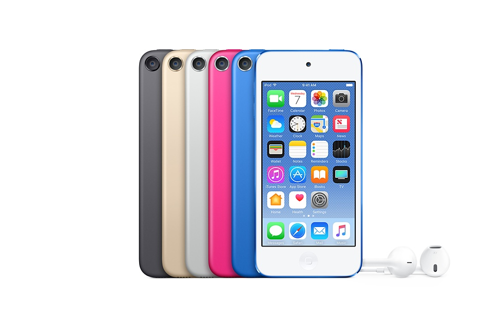
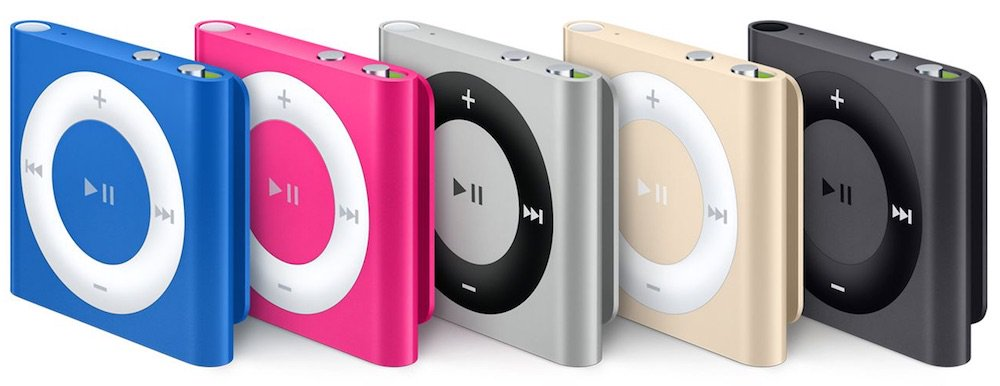

iPod's
Products our company Provied
iPod Touch Sixth Generation,The iPod Touch is an iOS-based all-purpose mobile device designed and marketed by Apple Inc with a touchscreen-controlled user interface. It can be used as a music and video player, digital camera, handheld game device, etc. It connects to the Internet only through Wi-Fi base stations, does not use cellular network data, and is therefore not a smartphone, though it has a similar design to the iPhone and is often referred to as the "iPhone without a data plan
iPod Shuffle Fourth Generation ,The iPod Shuffle is a digital audio player designed and marketed by Apple Inc. It was the smallest model in Apple's iPod family, and was the first iPod to use flash memory. The fourth generation features the return of clickable track and volume controls from the first two generations. The control pad is 18% larger than the second generation of iPod Shuffle, and the dimensions of the device are 29 mm × 31.6 mm × 8.7 mm (1.1 in × 1.2 in × 0.3 in) and it weighs 12.5 g (0.4 oz). It is also features Genius, and can handle multiple playlists. Like the previous generation it supports MP3, VBR, AAC, Protected AAC, Audible (formats 2, 3 and 4), WAV, AIFF and Apple Lossless, and its battery lasts for 15 hours of music, according to Apple